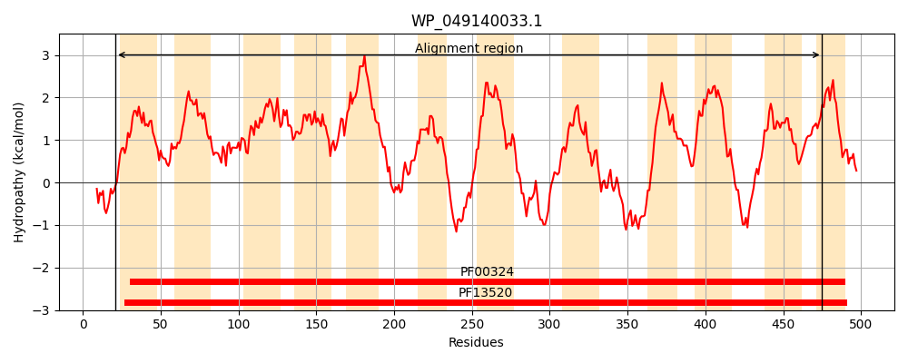
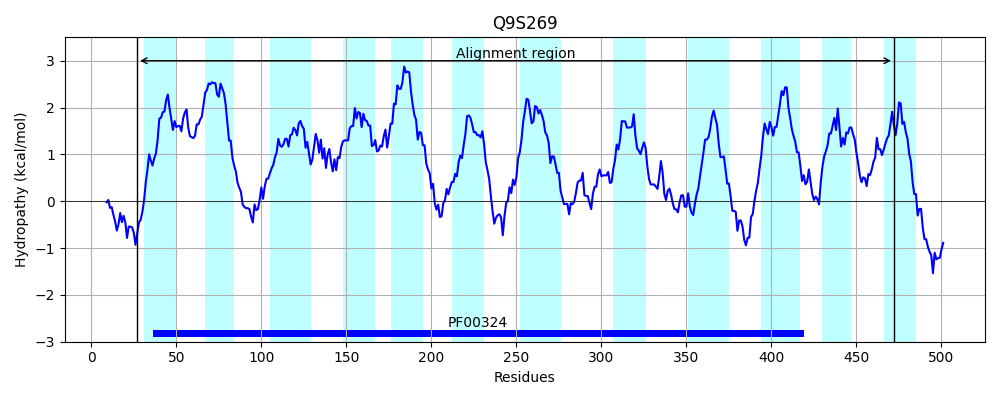
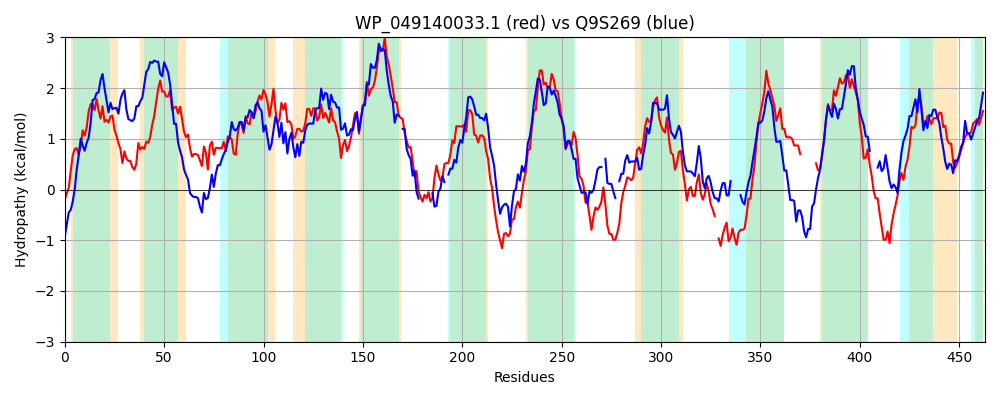

Hit Accession: Q9S269
Hit TCID: 2.A.3.15.5
Hit Description: gnl|BL_ORD_ID|18907 gnl|TC-DB|Q9S269|2.A.3.15.5 Putative amino acid permease OS=Streptomyces coelicolor (strain ATCC BAA-471 / A3(2) / M145) GN=SCO1683 PE=4 SV=1
Mach Len: 463
e:0.000000
Query TMS Count : 12
Hit TMS Count: 12
TMS-Overlap Score: 9.100000
Predicted Substrates:None
BLAST Alignment:
Score: 581 , Bit scores: 228 bits, E-value: 1.3e-68, Alignment length: 463, Percentage identity: 30
Query: 21 LRPNAVGLGGVLFMTIATAAPITAMLGNVPIAVGSGNGQFAPAGFMVATLILALFAIGYAQMARFITATGAFYGFISHGLGRIVGMASGVTVTMTYIVFEAALVGIFAFFCEDLINTVFSVHIPWLIFAFTMLMTTGVLSYFDISLTSRVLGLCLVLEILILTAVAVAVLIHGGGPQGFVPESINPLNAFTPAKGVVGASAGIGLFFAFWSWVGFESSAMYGEESKNPKKIIPLATLLGVIGIGVFYVFISWMAIAGTGPEQAIALAQDPNRAGEIFYGPARQYLGEWAVGVFKLLVITGSFACGMAFHNCAARYLYALGRENLFPFA-GRTLGRSHSRHGSPHVASTVQTVIATLIVLLFFITGKDPYAD-------IYTLLALLGTMGIMIVQALCAFAVIVYFHGNKENIGKGHWFKTGVAPLLGGMGMIYIVYLLFKNMAFAAGAAASSSFYHAIPWIV 475
LR + +G GG+L +A AP+ + G +P P F+V ++L LF+IGYA+M+R + GAFY +IS GLG G + + + Y + + GIF F L+ T + + W I A ++ G L + I + +RVLG+ L++E++++ +A + G QG L+AF P + GA G L F +++GFE + +Y EE+ P ++P L V G+ VF+ SW TGP++ + AQ+ + AG +F+ LG+ V +L +TG FA ++FHN ARY +A+GRE L P A GRT G S G+P S +QT ++ ++V+ F I P D ++T +G +G++++ A +F+V+ +F G V + G+ ++ I K+ GA S+ +P I+
Sbjct: 27 LRADRLGTGGLLLSVLAATAPLMVVAGVMPTTFAVMGIVGQPLLFVVLGVVLILFSIGYAEMSRHVHNAGAFYAYISRGLGGTAGAGAALVALVAYNALQVGIYGIFGFEVSGLLATYADLDVAWWIPALLAVLAVGALGWLKIDVNARVLGVLLLIEVVLVVVFDIAA-VTDPGAQGL------SLHAFDP-DTLSGAGVGTALCFCIAAFLGFEQAPVYAEETSRPHVLVPRVMFLAVGGVAVFFALSSWALTVATGPDKIVGTAQEQS-AGLLFF-LTESRLGDTFTDVLHVLFVTGMFAALLSFHNVVARYAFAMGREGLLPAAFGRTSGTS----GAPGTGSLLQTAVSAVVVIGFAIADDKPNGDPTEPVLHLFTWGGNIGALGVIVLMAAASFSVVAFF---ARRGAAGAQRVRLVTSTVAGIALLVIAGYTVKDFDVLVGAGPGSALSRVLPGII 472 | Protein Hydropathy Plots: |
|---|
|  |  |
Pairwise Alignment-Hydropathy Plot:
|
|---|
|  |